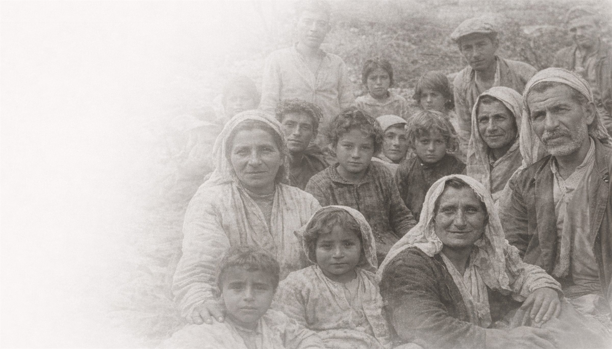
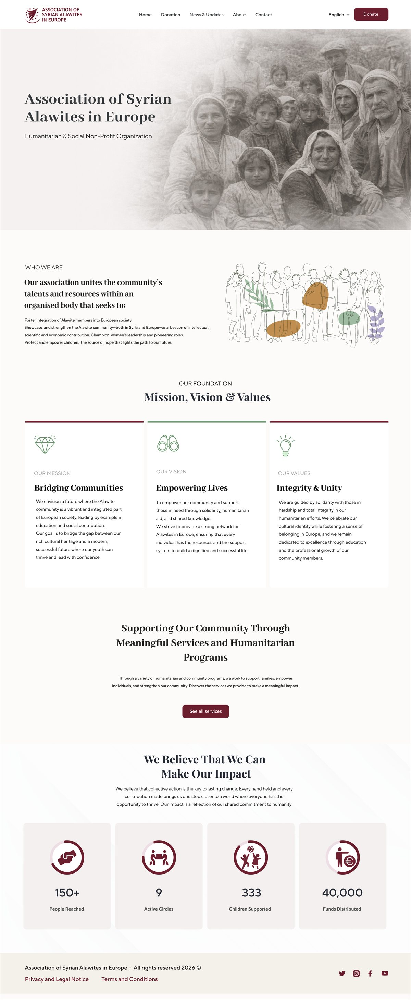
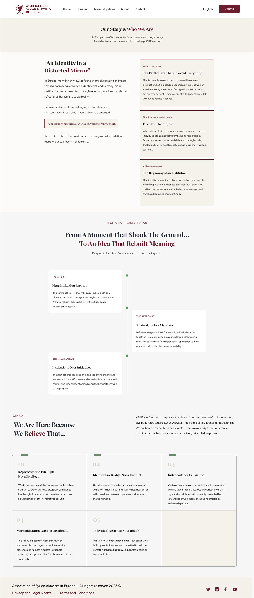
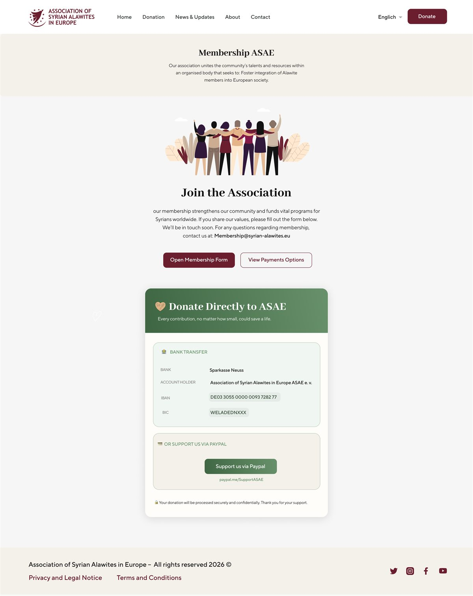
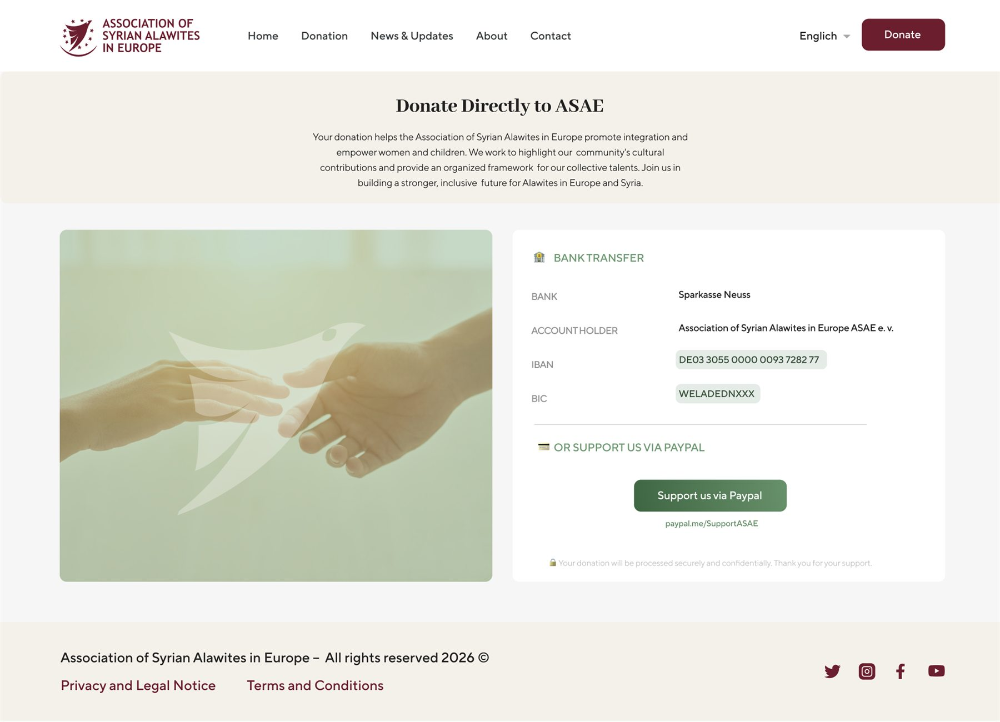
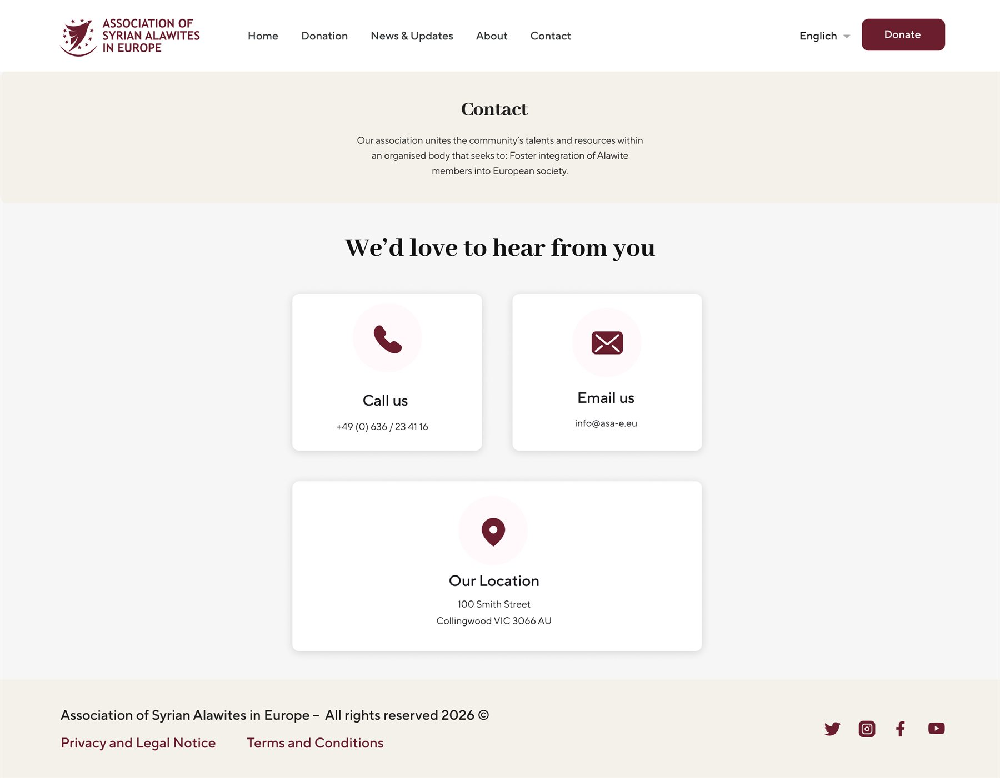

The earthquake that changed everything
The earthquake revealed not only the scale of destruction but a deeper reality: in many affected areas, people were left without an adequate response.

Website UI/UX · Humanitarian non-profit
Overview
A present community — and now, a voice to represent it.
ASAE unites the talents and resources of the Syrian Alawite community within one organised body. It works to foster integration into European society, to showcase the community’s intellectual, scientific and economic contribution, to champion women’s leadership and to protect and empower children. The website had to carry that mission with dignity: warm archival photography, a deep burgundy and a classic serif that let people and their stories speak first.
The home page introduces the association through three promises, each marked by a coloured rule and a simple line icon.
The About page tells how ASAE was born — from a gap between a deep cultural belonging and an absence of representation, told as a short timeline.
The earthquake revealed not only the scale of destruction but a deeper reality: in many affected areas, people were left without an adequate response.
Individuals, brought together by pain and responsibility, collected donations and delivered them through a safe, trusted network.
Individual efforts, however sincere, stay limited without an organised framework — and so the association took shape.
“Not to redefine identity, but to present it as it truly is.”
03 — The website
An archive photograph fades into the page beside the association’s name. Below: who we are, the mission, vision and values, the services, and the impact in numbers.
A long-form story page: an editorial introduction and pull quote on one side, the milestones of the association on cards beside it.
A friendly illustration, the membership form and payment options in one short page — with direct bank details and PayPal for those who want to give.



Donating is never more than one click away: the burgundy Donate button sits in every header and leads to a calm page with bank details and PayPal. Contact options are just as clear — call, email or visit.


Next project